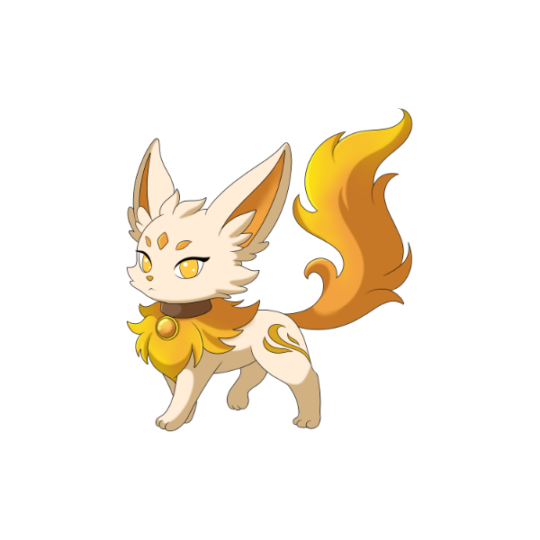
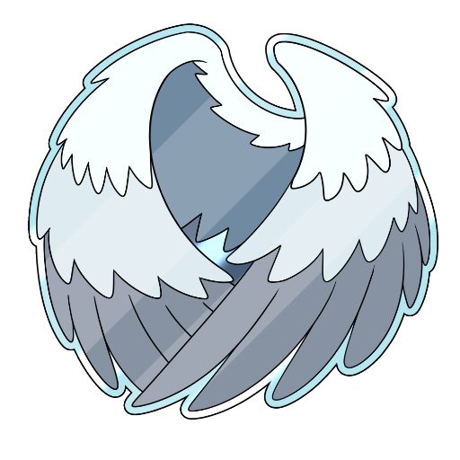
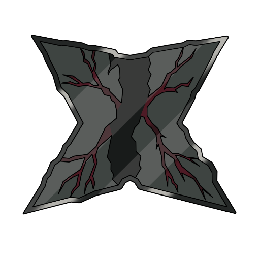
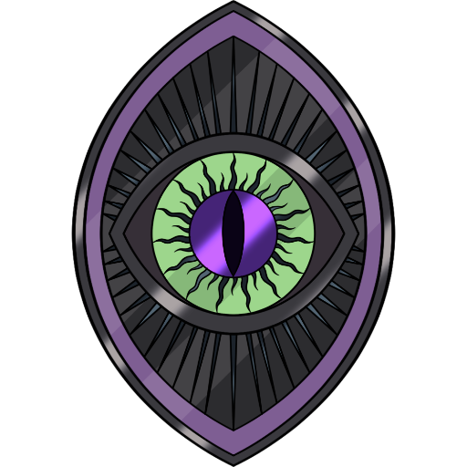
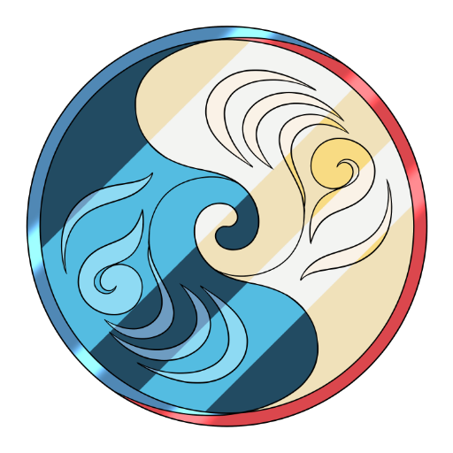
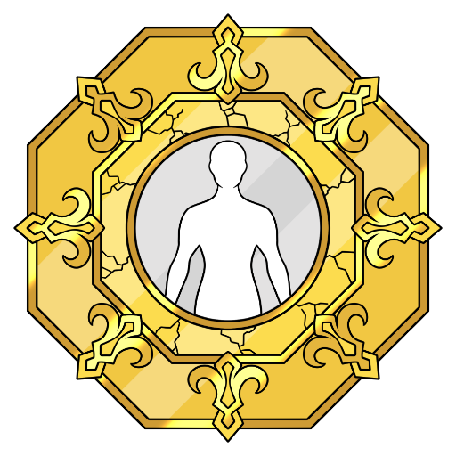

VENERE
Disturbi di Personalità
Nell'armonia del sé, il ritratto dell'anima.
GLI ABITANTI DEL MIO VENERE

Silen
La forma di Silen che abita il paesaggio del sé.
Silen è la specie ancestrale da cui discendono tutti i visitatori del nostro universo. Nella sua forma venusiana esplora il paesaggio del sé: le emozioni che bruciano, le difese che si alzano, gli specchi in cui cerchiamo conferma. Questa collezione osserva i disturbi di personalità con uno sguardo gentile, per trasformare il giudizio in comprensione e la distanza in incontro.OGNI LUNA UN VOLTO DEL SÉ
Ogni luna di Venere osserva un volto del paesaggio interiore: le difese, le emozioni, gli specchi.
Esplora le schede dedicate ai disturbi di personalità, con uno sguardo che non giudica.
Ogni scheda ha due voci: Cos'è spiega il tema con parole chiare, La luna racconta lo attraversa con la voce del progetto. Sono testi divulgativi: non sostituiscono il parere di un professionista — le storie, vere e proprie, stanno nei libri.

Disturbo Evitante di Personalità
La distanza come modo di proteggersi.
Il disturbo di personalità evitante è un pattern stabile di forte timidezza, paura del rifiuto e senso di inadeguatezza, che porta a evitare relazioni e occasioni anche quando le si desidera. Non è semplice timidezza: è un modo di stare al mondo che porta sofferenza, e si può trattare.

Disturbo Antisociale di Personalità
Quando le regole sembrano scritte per altri.
Il disturbo di personalità antisociale è un pattern di trasgressione delle regole, scarso interesse per i diritti altrui e difficoltà a provare senso di colpa, che si manifesta entro l'adolescenza. Non significa essere solitari o antipatici: è una condizione clinica seria, da non confondere con la cattiveria.

Disturbo Paranoide di Personalità
La guardia che non si abbassa mai.
Il disturbo di personalità paranoide è un pattern diffuso di sfiducia e sospettosità: le intenzioni degli altri vengono lette come minacciose o meschine. È una lente costante sulla realtà, spesso radicata in esperienze passate, e si accompagna con un percorso psicologico.

Disturbo Borderline di Personalità
Emozioni che bruciano a piena intensità.
Il disturbo di personalità borderline è caratterizzato da instabilità emotiva, relazioni intense e altalenanti, forte paura dell'abbandono e un'immagine di sé incerta. Non significa essere eccessivi: è un disturbo riconosciuto, e le terapie specifiche — come la DBT — danno risultati concreti.

Disturbo Narcisistico di Personalità
Lo specchio che chiede conferma.
Il disturbo di personalità narcisistico è un pattern di grandiosità, bisogno di ammirazione e difficoltà a riconoscere i bisogni altrui, che spesso nasconde una stima di sé fragile. Non è semplice vanità: è un modo rigido di funzionare che crea sofferenza, anche a chi lo vive.
Disturbo Istrionico di Personalità
Il ritratto che cerca uno specchio.
Il disturbo di personalità istrionico è un pattern di emotività intensa e ricerca di attenzione, con relazioni vissute come più intime di quanto siano. Non significa fare scene: è uno stile relazionale stabile e sofferente, che si può esplorare in terapia.
INFORMAZIONI E LICENZE
Le opere esposte sono tutelate da diritto d'autore. Per collaborazioni, richieste professionali o per consultare il catalogo delle licenze autorizzate, puoi trovarmi qui:
Iscriviti alla nostra mailing list
Novità su libri, storie e nuove lune: qualche email, mai di più.
Se il modulo qui sopra non funziona, apri l'iscrizione in una nuova scheda
Ogni riproduzione non autorizzata è vietata.